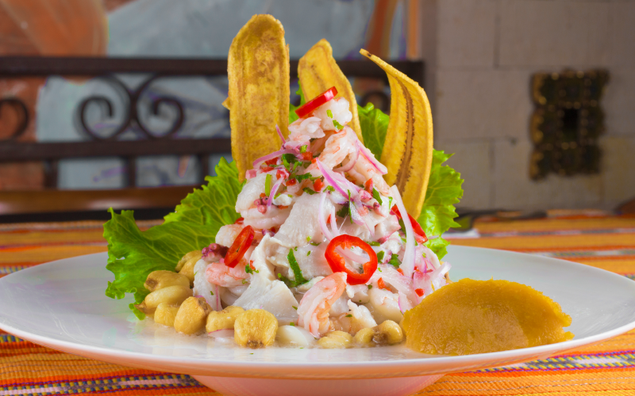

Gastronomía peruana: Cocina con sabor y corazón Calificada por muchos expertos como una de las mejores del mundo, la comida peruana destaca por su sabor, aroma, originalidad y riqueza alimenticia. No en vano Lima ha sido calificada como la capital gastronómica de Latinoamérica. Las influencias culinarias que dieron vida a su sazón provienen de la época preincaica, incaica y la colonización española, pasando por la inmigración africana, china, japonesa e italiana. Todas estas culturas aportaron sus ingredientes, sus preparaciones, sus estilos, los que al fusionarse produjeron una maravillosa mezcla de sabores y una impresionante variedad de platos criollos, casi imposibles de enumerar. La diversidad de regiones (costa, sierra y selva) y climas en el Perú, les permite contar con una de las mayores biodiversidades del planeta. La región andina aporta una infinidad de tubérculos, maíz y carnes (llama, alpaca y cuy). La cocina selvática, en tanto, es tan variada como desconocida. Peces amazónicos (paiche) y frutas (aguaje, camu-camu) son la base para algunos exquisitos y exóticos platillos. La gastronomía es un arte en constante evolución. De ahí que lo nuevo sea la cocina Nikkei, donde se unen los sabores tradicionales de la comida criolla con la cocina japonesa.
Las costas peruanas se caracterizan por una variedad inimaginable de pescados y mariscos. Por eso existe una gran diversidad de platos marinos como el pescado A lo Macho (filete de pescado dorado y bañado con una salsa picante de mariscos), A la Chorrillana (filetes de pescado a la plancha cubierto por una salsa de tomate y cebolla) o Sudado (el pescado se cocina al vapor sobre un guiso hecho con tomate, cebolla, ají y cilantro). Otros platos típicos de la gastronomía marina y clásicos del día de playa, son el Chicharrón de Pescado, el cual se prepara con trozos de pescado sazonado, enharinado y frito. Algo así como una escalopa de pescado; muy sabroso y fresco. Si se añaden mariscos, se le conoce como jalea y se acompaña con yucas doradas y Salsa Criolla (cebolla cortada en pluma y aderezada con limón y ají). Los Choritos a la Chalaca son otro infaltable en la cocina del mar: choros cocidos y servidos en su concha con una salsa de cebolla, tomate y ajíes. El rey de todos Pero, sin duda, el rey es el Ceviche, plato tradicional y parte del Patrimonio Culinario del Perú, y del que existen infinitas preparaciones a lo largo del país y del mundo. Podríamos decir que su receta más purista incluye pescado fresco (lo cual es fundamental) en cubos, cebolla, jugo de limón, sal y ají. Pero hay otras variaciones en las que se incluyen mariscos (Ceviche Mixto, Ceviche de Camarones), algas, jugos de fruta (maracuyá, camu-camu, naranja), llegando incluso a ceviches de frutas o verduras (champiñones, pal- mitos, mango verde). Si prefiere otras carnes, la alternativa puede ser el famoso Ceviche de Pato Norteño, plato que se cocina y se come caliente, o el Ceviche de Pollo, que se sirve a temperatura ambiente. A partir de esta famosa preparación se originan variantes clásicas y muy solicitadas por los buenos “cevicheros”, como la Leche de Tigre, bebida servida como entrada o aperitivo y que se prepara gracias a la concentración de sabores del jugo del ceviche. El Tiradito, en tanto, es familiar del ceviche, pero sin cebolla. El pescado se corta en lonjas no muy gruesas, las que se aliñan y se pueden servir bañadas con alguna pasta de ají. Sopas y caldos Por otro lado, las sopas y caldos también ocupan un lugar importante en la gastronomía marina peruana. La Parihuela es un caldo concentrado de mariscos y pescados, lleno de sabor y fuerza. Más humilde pero no menos delicioso, el Chilcano se prepara con la cabeza del pescado, y tiene propiedades energéticas por su gran cantidad de proteínas y fósforo. El Chupe de Camarones es un caldo sustancioso, sabroso, en el que se incluyen papas, pulpa de tomates, choclo, arvejas, camarones y que se sirve con un chorro de leche evaporada. En Perú se conocen más de 3.000 variedades de papas, acompañamiento de varias preparaciones y el ingrediente principal de dos famosas entradas: la Causa Limeña y las Papas a la Huancaína. El primero es un plato muy popular en base a puré de papa amarilla que admite varios rellenos, siendo los más conocidos el atún y el pollo. La segunda preparación es la clásica entrada peruana, cuyos ingredientes básicos son papa amarilla, queso fresco, ají, leche y pan.
Otras comidas para abrir el apetito antes del plato principal son los Anticuchos de Corazón, brochetas de carne de res aderezadas con ají panca, vinagre y cocinados a la parrilla; y los Tamales de maíz rellenos con pollo o cerdo. Un plato típico de la ciudad de Arequipa es el Rocoto Relleno, un tipo de ají del tamaño de una manzana pequeña con un sabor picante y dulzón, que se rellena de carne molida, cebolla, aceitunas, queso fresco rallado y huevo duro. Los platos fuertes de la gastronomía peruana pueden llevar carne de res, cordero, pollo, pato y cuy. El Ají de Gallina, es uno de los platos criollos más pedidos por extranjeros. Otro favorito es el Lomo Saltado, que mezcla carne, tomate cebolla y ají, salteados sobre un wok muy caliente con una técnica muy típica de la comida china. Menos difundido, pero igual de sabroso es el Seco de Cordero, en el cual se cocinan cubos de carne en una salsa de cilantro y ají, dando como resultado un guiso absolutamente delicioso. El Cuy Chactado es un plato andino, clásico de la sierra del Perú, en el que la carne de este pequeño roedor se machaca conservando su forma, se fríe y se presenta en una sola pieza (sin la piel, por supuesto). En tanto, el arroz en la comida peruana es muy importante, ya sea como acompañamiento o como base de una preparación. El Tacu Tacu, por ejemplo, es una mezcla de frijoles y arroz a los que se les da una forma ovalada y se dora en aceite caliente. Generalmente se acompaña con un bistec de carne o una salsa de mariscos. También podemos disfrutar de un Arroz con Ma- riscos, Arroz con Pollo y Arroz Chaufa (un tradicional de la comida china o “chifa”).